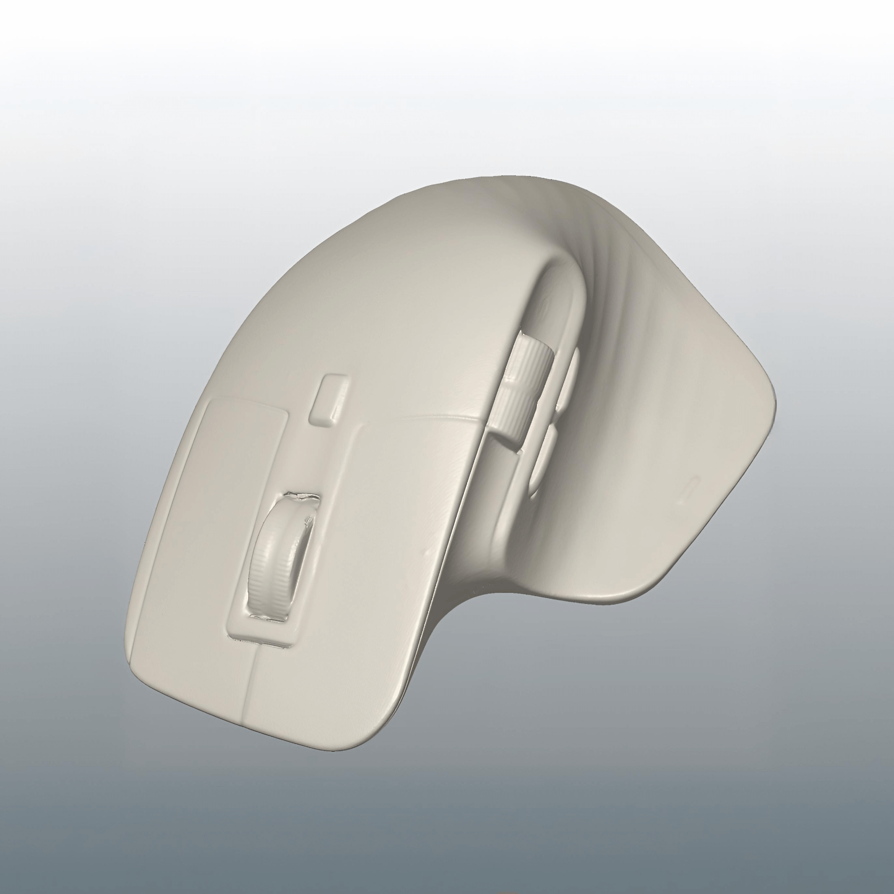
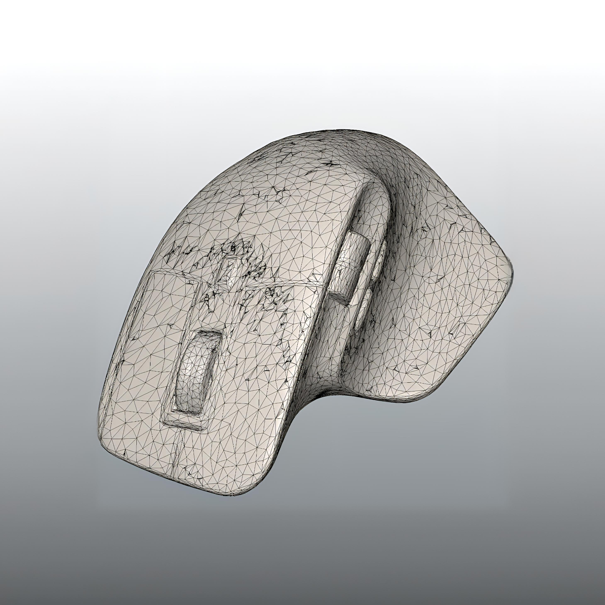
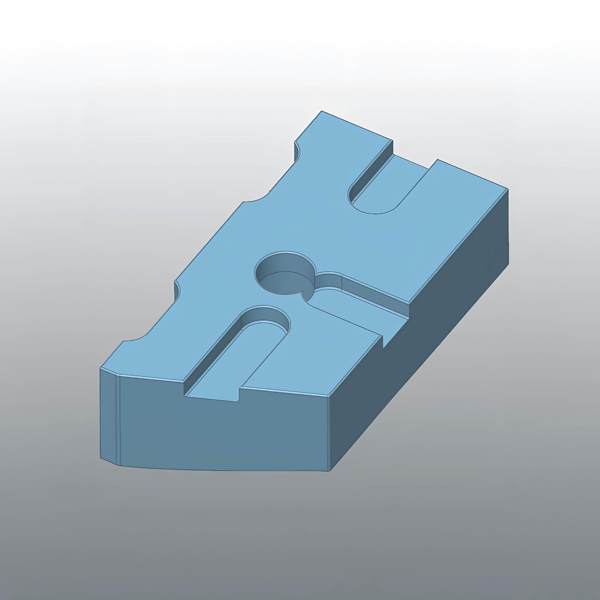
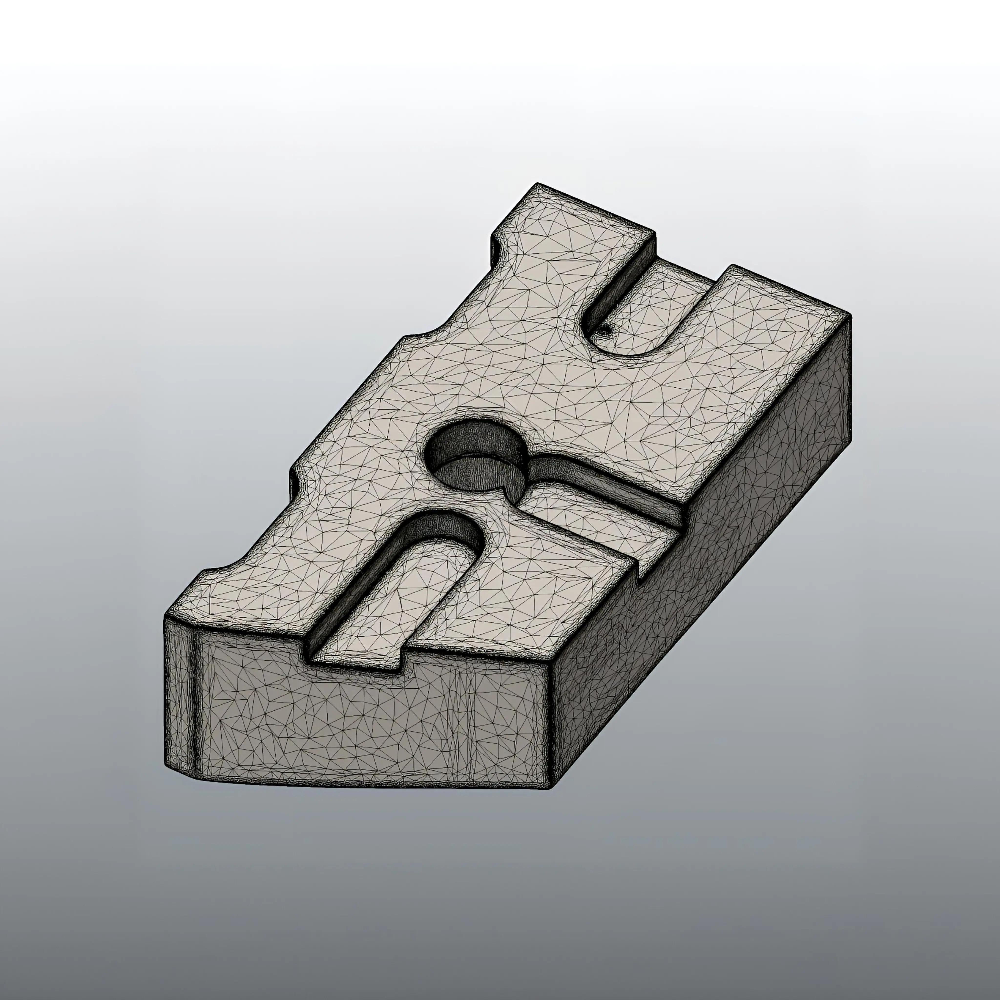

Au service de vos projets
ExactShape Solutions accompagne vos besoins en numérisation 3D et rétro-ingénierie


Scan 3D
Scan 3D d’une souris ergonomique.


Rétro-ingénierie
Reconstruction d’une vitre de feu. Glissez pour voir la pièce cassée vs le modèle final.
Modélisation CAO
Modélisation CAO et étude de mouvement d'un mécanisme actionné par verin.


Titre
Sous titre (fr)


Ajouts
Modification d'une pièce de connexion de tubes par ajout d'une extension